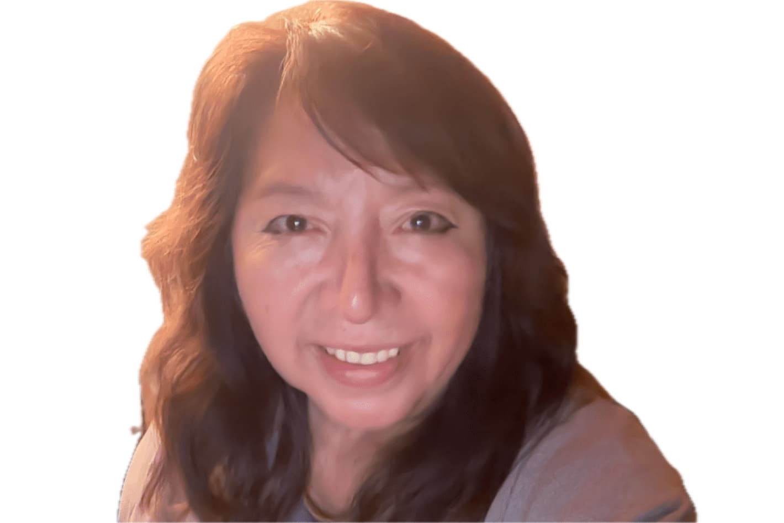

About me
Hello! I'm Maria Arroyo, a student in the WDD 131 course. I'm passionate about web development and teaching. I was born in Mexico. And I live in California USA with my family. I love to travel and explore new places. I am always learning something new and improving my skills.
California
California is a beautiful state with diverse landscapes, from beaches to mountains. It is known for its vibrant culture, technology hubs, and entertainment industry. I enjoy exploring different cities and experiencing the unique vibe each one offers.